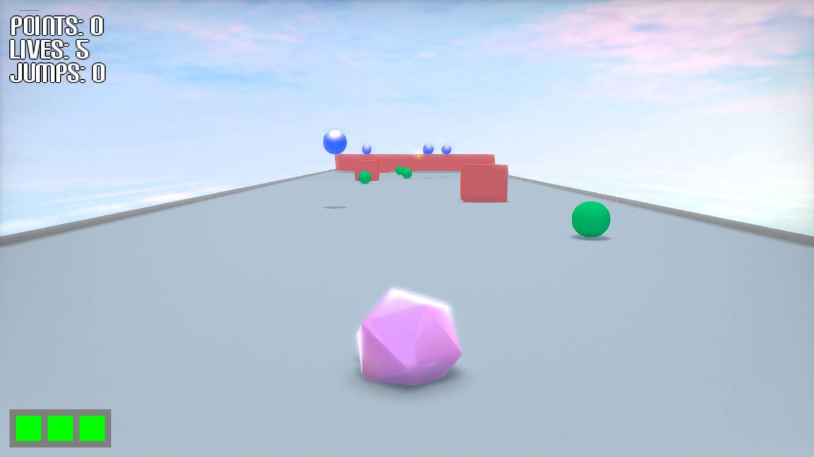
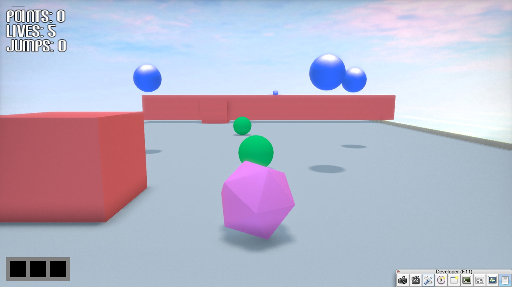
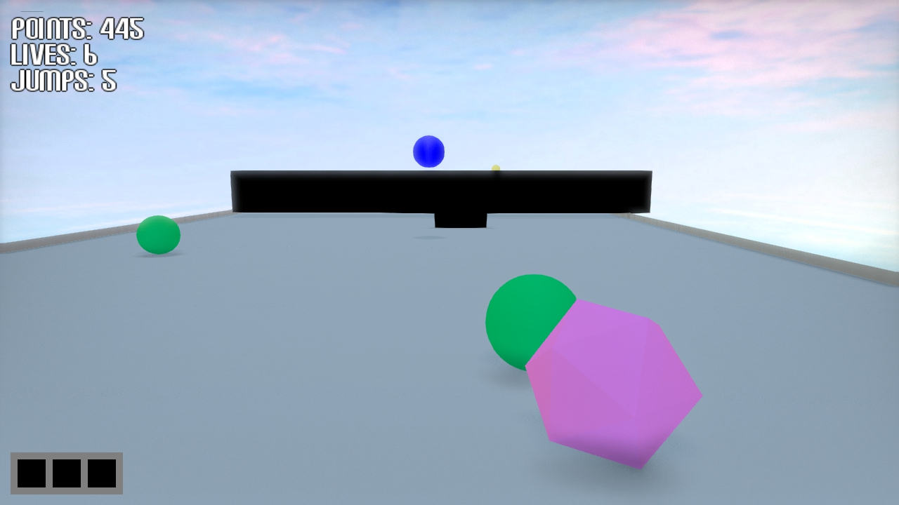

|
7 - Rasterization
David Yan and Kelly Wang
|
| Establish2 |
| Establish1 |
| Footage2 |
List of powerups for the instruction pages:
I also created an 'establishing shot' scene to manually capture the first shot of our trailer, recorded some footage to use in the trailer to emphasize the icosahedron, and give it character.
–Kelly
Working from Cali. Unfortunately G3D is broken on my machine so I'm doing whatever I can to assist Kelly without directly touching the code. This includes filling out more of the report, making sure all materials are up to spec, etc etc.
–David
|  |
| This is your character |
|  |
| Current Gameplay visuals |
In office hours today, we fixed lighting with help from Morgan; the sun is now a spotlight that follows the camera and thus the player entity. I also decreased sensitivity of the camera to darken the skybox, and increased the spotligt bulb power to light the road. Change shadowMapBias to handle shadows, nearZPlaneLimit shoule be small enough to not confuse the shadowMap, making it try to draw object really far away.
To make light follow the camera:
|  |
| Collect Greens |
-Kelly
I also implemented Instruction pages that will scroll through teaching the user how to play in the beginning.
m_instruction is true if the instruction tutorial pages are still running, m_running is true if the game is running.
-Kelly
I spent some time trying to make a Player Entity rotate in onSimulation. Writing this does not work. We see a quick flash of the scene and then everything disappears.
Playing around a little more with the code, The camera moves for some reason, or the Player entity simply starts moving backwards.
As we have only two days and David will be out of town Monday and Tuesday, this is my ToDo list:
-TRAILER!! Play with splines for that one scene...
-Mainpage: 3 paragraphs about the visuals
-ask Morgan: Spinning entity, title screen with "hit enter to play" Skyboxes in place of the fractal shader
-Display intro pages with instructions: Use the left and right arrows or 'A' 'D' to move left and right > Collect colorful balls but be careful to avoid hitting obstacles! > Different color combos activate different powerups. Collect your colors, and press 'S' to submit when you're done.
-Print to screen patterns
-Gameplay trailer
-change blue, sensitivity, road
Based on some ideas Kelly and I discussed, I decided to add more things to pickup, and also award more powerups. Thanks to the framework I implemented yesterday, system-wise, this was as easy as adding more logic to the switch tables on the game: what to draw, what to check for, etc etc.
We also decided it might be worthwhile to place some pickups on a 2nd 'height' of the game, which is essentially only reachable by jumping or 'flying'.
As a result of all of these changes, the object layout python file has a lot more logic in it now. The idea is still the same as before from the last lab. However, we have made the logic of placing objects significantly more complex (using more random number generators, placing different kinds of objects, placing more objects). That being said, we could now possibly generate many different levels. Random generation isn't great for actual meaningful powerup placement, but it still seems exciting enough.
I'm also considering adding some sort of shield mechanic, though this is not the easiest thing to do. Most shields in games are semi-transparent, so that you can see the player while also noticing the shield. We're currently running into issues implementing transparent models, which also does not take into consideration the fact that we also need to worry about collision interaction between the shield, the player, and all other objects.
–David
Powerups:
Craft combinations:
Aesthetics:
I spent some time looking for 3d models to put in our game and also found a nicer song called "Rainbow Rush" from http://opengameart.org/content/rainbow-rush by Yubatake, under a Creative Commons license. We originally wanted to have the character animate and run down the road, but we quickly decided it would be easier to simply have a spinning cube or similar simple shape and make it colorful rather than make it look really well modeled.
Another model we were thinking of using was a low poly penguin: http://opengameart.org/content/pinguin-low-poly and a spaceship: http://www.turbosquid.com/FullPreview/Index.cfm/ID/531813 and a robot: http://www.turbosquid.com/3d-models/free-3ds-mode-robot-spike/613288, http://www.turbosquid.com/FullPreview/Index.cfm/ID/332966.
For some reason, right now the program runs extremely slowly. It may have something to do with something David implemented just before he left.
-Kelly
I implemented the powerup mechanic mentioned yesterday. The powerup storage bar is placed on the bottom left of the screen.
Currently our internal representation of powerup storage is an array of strings. The default state is 'none'. Everytime you hit an object of a certain color, that color is then added into our array at index 0 as a strpmg, and the last object is popped off. This gives the impresseion that the powerup bar is added from left to right. This ensures that the size of our array is at most 6, though we only look for 5 at a time.
After hitting the 's' key (for now), the entire storage is emptied, and we check what rewards to give based on what colors were in our storage bar. It is possible to pre-emptively empty the storage bar, and not get any rewards. We will probably want to have some way to indicating when a user is rewarded for consuming their powerup bar, or notify them that they have a bad configuration of colors in the powerup bar.
▶ Play Video |
| Consuming 3+ greens increases life count |
– David
Added support for a Game over mechanic. We keep track of the total health/number of lives left in App and display a message when the player runs out of lives.
I'm also looking for models that fit well with the fractal cartoon shader but we may need to rethink the aestheti of our game! -Kelly
Working on an implementation for the 'crafting' mechanic of our pickups. Since we can only draw rectangles on the 2D ui (besides fonts), I need to rethink how the mechanic looks.
For now, most likely the bar is going to be a long rectangle overlayed with 5 squares. Once you pickup an object of a certain color, one of the squares will light up the appropriate color. Colors are going to be swapped in a queue like manner (once all 5 squares are lit, picking up another item will dequeue on of the squares and enqueue another one).
Given that I feel nervous about passing pointers between PlayerEntity and App.cpp, it might be best for now to actually leave this within the scope of App.cpp
-David
Turns out that implementing GUI stats on the screen really isn't that hard. I basically made a buffoon of myself by trying to replicate the 4-GPU lab and drawing onto the frame buffer. In reality, it's as simple as
Here's a preliminary screenshot.
 |
| Now for other 2D primitive shapes. |
TODO: Work on crafting system / healthbar / actually meaningful statistics.
–David
Friday
Kelly - Implement control input (player movement)
David - Figure out how to implement a pixel shader into a G3D scene file.
Saturday
David - basic game environment with pixel shader, place a player.
Kelley - put objects on screen? David will come help with GUIs/Intro pages
Sunday
Minimum Viable Product
-Start adding gameplay features/mechanisms
Monday
David - Special powerups etc...
Kelly - Work on trailer + videos
Tuesday
Complete report.
 1.8.9.1
1.8.9.1


{kind=link}
{kind=link}
{kind=link}